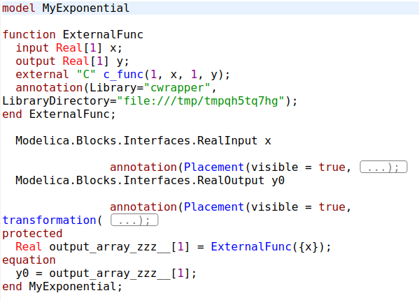
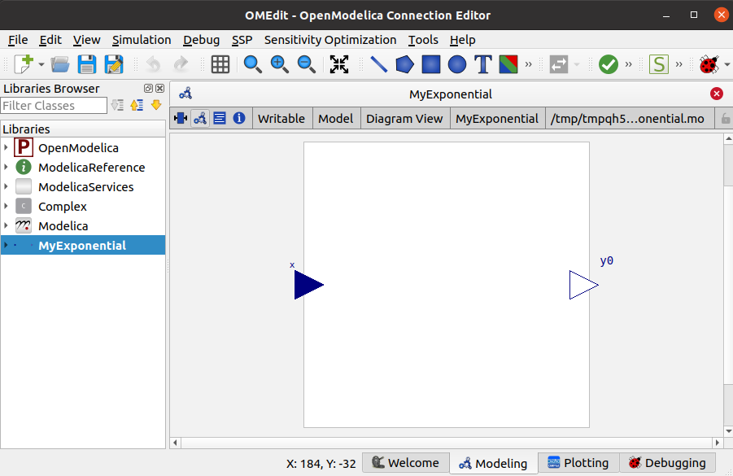
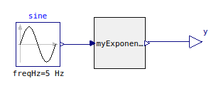
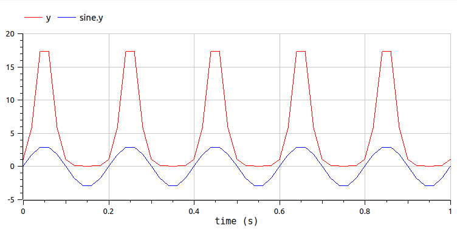

Note
Go to the end to download the full example code.
Export a function as Modelica model#
The method export_model of FunctionExporter is another way
to export OpenTURNS functions, but this time as Modelica model.
This can be useful if you want to include a function produced with OpenTURNS
into a Modelica model.
Compared to export_fmu, here, you cannot export models with time-dependent
outputs.
# One application of the inclusion of a metamodel in
# `OpenModelica GUI <https://openmodelica.org/?id=78:omconnectioneditoromedit&catid=10:main-category>`_
# is described in
# `this paper <https://www.researchgate.net/publication/354810878_Analysis_and_reduction_of_models_using_Persalys>`_.
import openturns as ot
import otfmi
import tempfile
from os.path import join
First, we create the OpenTURNS function to export as Modelica model.
func = ot.SymbolicFunction("x", "exp(x)")
inputPoint = [2.0]
print(func(inputPoint))
[7.38906]
We create the model constructor and the folder in which save the model:
fmuExporter = otfmi.FunctionExporter(func)
model_path = join(tempfile.mkdtemp(), "myExponential.mo")
print(model_path)
/tmp/tmpdsi3zbip/myExponential.mo
We create the FunctionExporter instance and export the exponential function.
We specify gui=True to use the model in a Modelica GUI in connection
with other components.
modelExporter = otfmi.FunctionExporter(func)
modelExporter.export_model(model_path, gui=True)
Simple as it looks, this function actually writes a C-wrapper for the OpenTURNS function, then writes a Modelica model calling the C-wrapper as External function.
We import this model in OpenModelica GUI. We can check the Modelica code:
{kind=link}

Note
The path to the C-wrapper is hard-coded in the model.
We can also check the connectors position:
{kind=link}

We connect the wrapper to an input sine signal (Modelica.Blocks.Sources.Sine) and to an output block (Modelica.Blocks.Interfaces.RealOutput):
{kind=link}

We simulate the model on 1 second, with 50 time steps. We can verify that y output corresponds to the exponential of the sine signal.
{kind=link}

Note
3 modes are available to export the function
(see FunctionExporter).
By default, the mode used to export the function is ‘cxx’.
This mode leads to the fastest version of the model, but you need to
install OpenTURNS with conda.
Total running time of the script: (0 minutes 4.288 seconds)